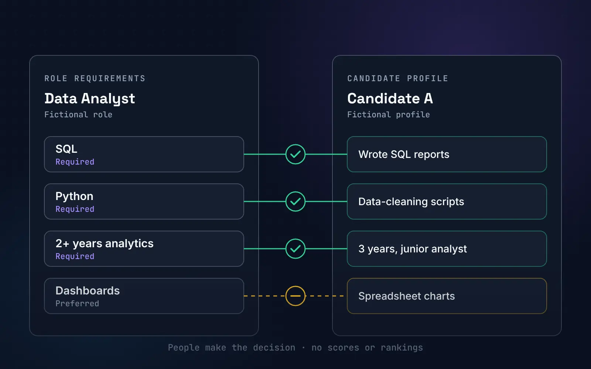

AI Resume Matching
An AI-powered solution that evaluates candidate profiles against role requirements. It’s live in production.
- AI / ML

- My contribution
- Original proof of concept
- Status
- Live in production
- Categories
- AI / ML
The problem
Recruiters need to compare each candidate’s profile with what a role requires.
Technical approach
Each requirement of a role is set beside the evidence in a candidate’s profile, on skills and experience, so the recruiter can review the alignment. People make the decision.
Requirements beside evidence
Functional view drawn from the documented capabilities, with sample content. It is not a system architecture diagram.
A fictional role beside evidence from a fictional candidate profile. Select a requirement to see the supporting evidence.
| Requirement | Evidence in the profile | Alignment |
|---|---|---|
| Wrote SQL reports for sales data | AlignedDirect experience writing SQL for reporting. | |
| Python scripts for data cleaning | AlignedUses Python to prepare data. | |
| 3 years as a junior analyst | AlignedMore than the minimum experience. | |
| Spreadsheet charts for monthly reviews | Partly alignedCharts, but no dashboard work is mentioned. |
candidate-a-resume.pdf · fictional
Candidate A
Junior data analyst, 3 years in a retail analytics team.
- Wrote SQL reports for sales data
- Python scripts for data cleaning
- Spreadsheet charts for monthly reviews
Human review. The comparison supports the recruiter; people make the decision. No scores or rankings are shown or implied.
My contribution
I developed the original proof of concept for this solution. The solution has since gone live in production.
Technologies
Stack details not yet published
Technologies are listed only once confirmed.
Results and status
Candidate profiles are compared with role requirements on skills and experience, supporting the people who make the decision. The solution is live in production.
- Status
- Live in production
- Metrics
- No published metrics
Walkthrough
It shows a fictional role and profile compared, requirement by requirement, for a recruiter to review.
Read the walkthrough as text
- Role requirementsA fictional Data Analyst role lists required and preferred skills and experience.
- Candidate profileA fictional candidate’s resume is read and understood.
- Skills and experienceRelevant skills and experience in the profile are matched to the requirements.
- Comparison for reviewA structured comparison supports the people who make the decision.
Repository and demo
- RepositoryNot public: company project
- Live demoNot public: company project
- Illustrative walkthroughDescribed above, as text